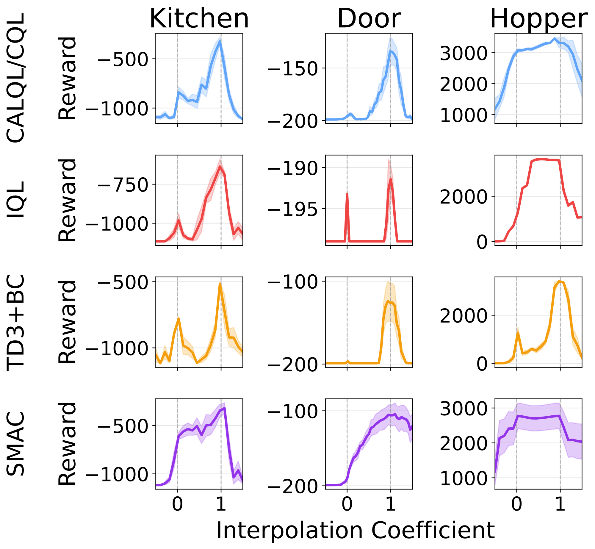
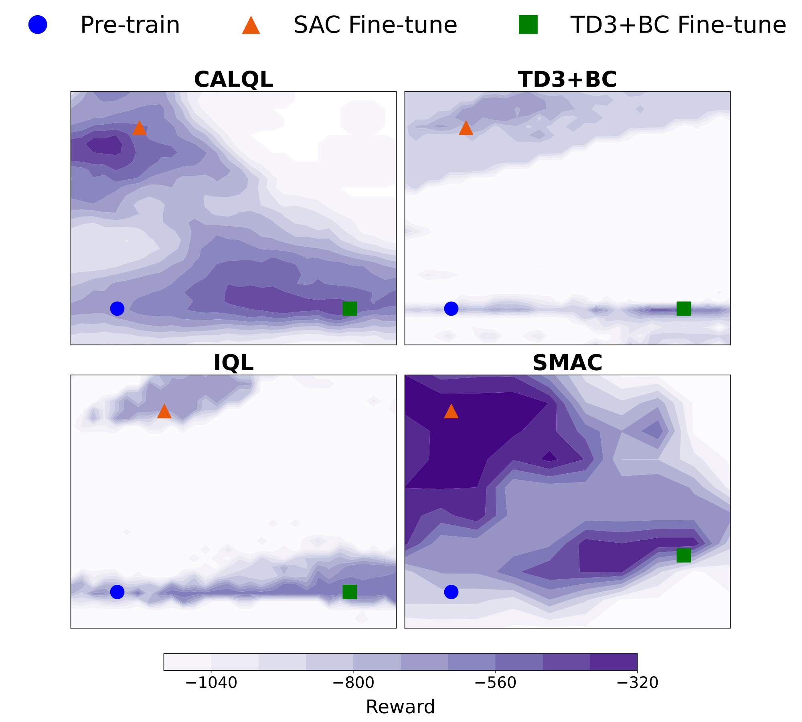
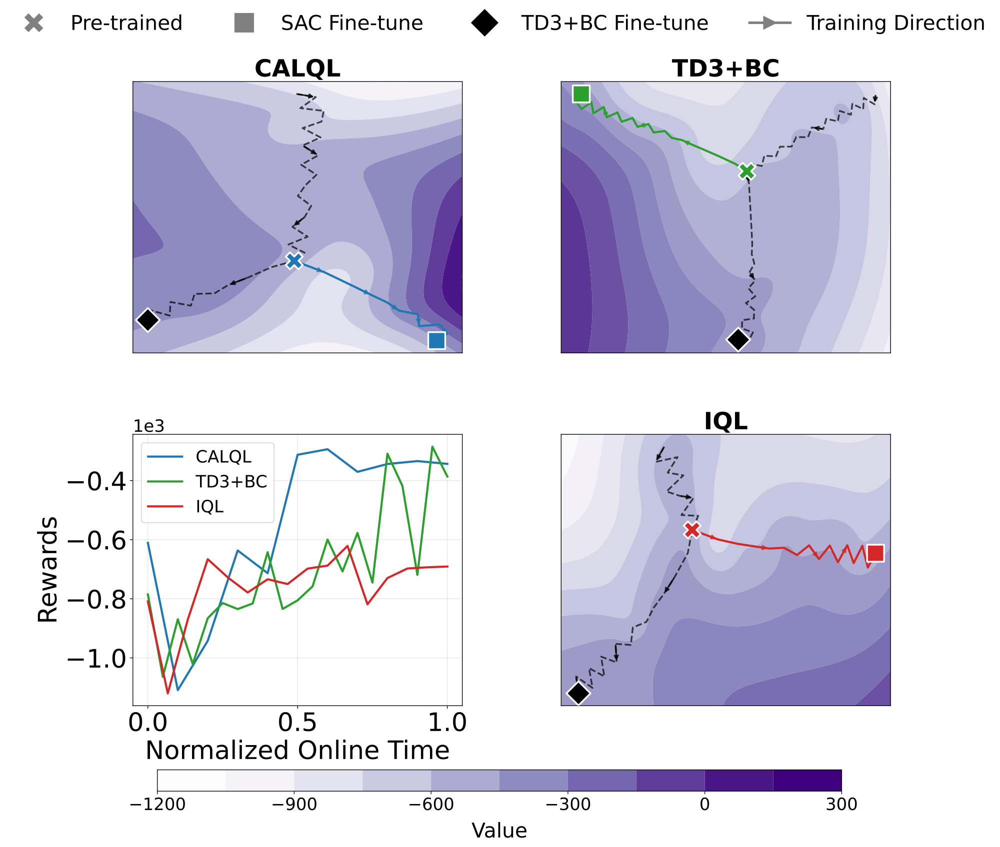
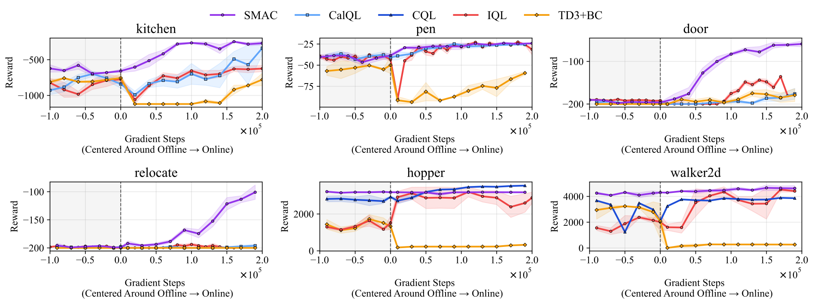
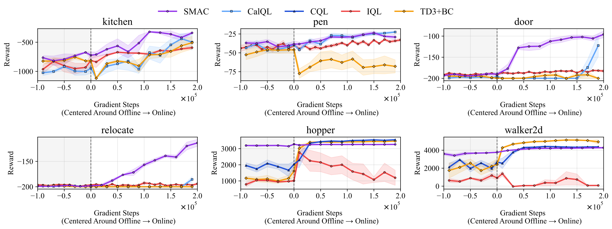
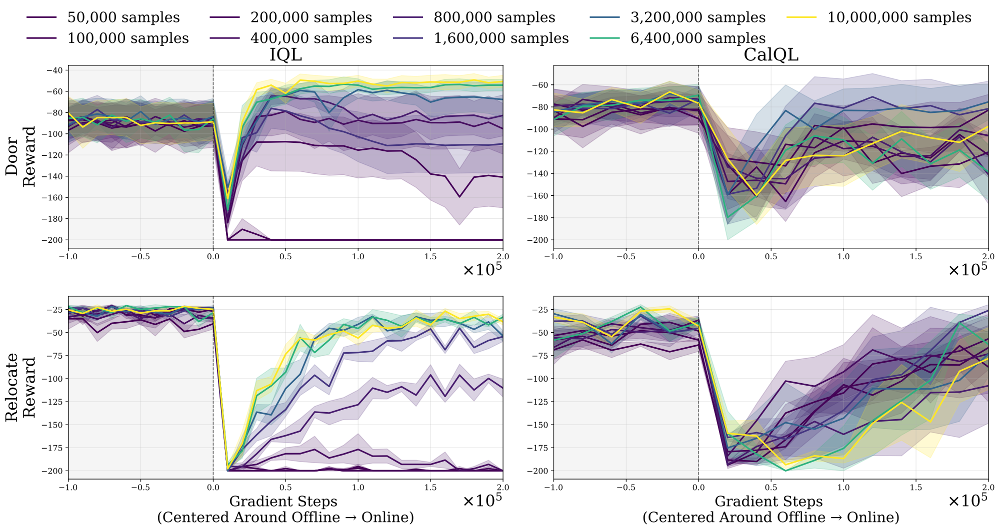

Modern offline Reinforcement Learning (RL) methods find performant actor-critics, however, fine-tuning these actor-critics online with value-based RL algorithms typically causes immediate drops in performance. We provide evidence consistent with the hypothesis that, in the loss landscape, offline maxima for prior algorithms and online maxima are separated by low-performance valleys that gradient-based fine-tuning traverses. Following this, we present Score Matched Actor-Critic (SMAC), an offline RL method designed to learn actor–critics that transition to online value-based RL algorithms with no drop in performance. SMAC avoids valleys between offline and online maxima by regularizing the Q-function during the offline phase to respect a first-order derivative equality between the score of the policy and action-gradient of the Q-function. We experimentally demonstrate that SMAC converges to offline maxima that are connected to better online maxima via paths with monotonically increasing reward found by first-order optimization. SMAC achieves smooth transfer to Soft Actor-Critic and TD3 in 6/6 D4RL tasks. In 4/6 environments, it reduces regret by 34–58% over the best baseline.
Ideally, an offline RL algorithm should pre-train an actor-critic that can be fine-tuned by any online method without performance degradation. However, fine-tuningactor–critics found by past offline RL methods with online value-based methods often triggered an immediate drop in performance. For offline RL to truly support a pre-train → fine-tune paradigm—analogous to what we see in large language models—it should produce actor–critics that are both performant, and, able to readily learn from new data. This is a problem we aim to address with SMAC.
SMAC pre-trains actor-critics that are both performant, and, able to readily learn from new data with online value-based methods. We find that a key to smooth offline-to-online transfer is linear connectivity between offline and online maxima. Similarly, the notion that offline and online objectives are aligned towards finding the same optima. From this perspective, we can understand why past methods like CalQL and IQL experience a performance drop upon transfer. Popular offline RL methods rely on minimizing Q-values or out-of-distribution actions (e.g., CQL, CalQL) or explicit policy constraints (e.g., TD3+BC, IQL), which can misalign the offline objective with the online objective.
We study this problem through the lens of optimization landscape geometry. Two high-performing solutions are linearly connected if reward changes monotonically along the straight line between them in parameter space. We hypothesize that the initial performance drop during fine-tuning is explained by offline and online maxima being linearly disconnected—separated by low-reward valleys that gradient-based optimization must traverse.
To test our hypothesis, we visualize the reward landscape between offline pre-trained checkpoints and their SAC fine-tuned counterparts. We plot performance along 1-dimensional and 2-dimensional slices in parameter space. A later result looks at projections of the training trajectories into 2D using t-SNE, but here we focus on the 1-dimensional and 2-dimensional slices for finding valleys between offline and online maxima. In the figure below, we interpolate between the pre-trained parameters \(\theta_{\text{offline}}\) and the fine-tuned parameters \(\theta_{\text{online}}\) along the line \(\theta(t) = t \cdot \theta_{\text{offline}} + (1-t) \cdot \theta_{\text{online}}\) and evaluate the reward at each point. The lines show that between \(t = 0\) and \(t = 1\), all the baselines experience a drop in performance between checkpoints in at leat one task. These drops resembling low-reward valleys along the line between the found maxima. Later in the results section we see that the existence of these valleys is consistent with whether or not the algorithms experience a performance drop upon transfer.

Reward valleys when linearly interpolating between pre-training and fine-tuning checkpoints. \(0\) is the pre-trained checkpoint, \(1\) is the SAC fine-tuned checkpoint. All methods except SMAC exhibit a drop in performance between checkpoints. Lines show mean over 4 seeds with shading for standard error.
We can further visualize the geometry by looking at the reward surface on the plane defined by three parameterizations: the pre-trained checkpoint \(\theta\), a SAC fine-tuned checkpoint \(\theta_1\), and a TD3+BC fine-tuned checkpoint \(\theta_2\). The plane is spanned by \(u := \theta_1 - \theta\) and \(v := \theta_2 - \theta\).

Reward visualized along a plane in parameter space on the Kitchen task. The line between pre-trained and SAC fine-tuned parameters travels through a low reward valley for all algorithms except SMAC. SMAC’s maxima are linearly connected.
We see that the SAC maxima are wider and not connected to the pre-trained checkpoint along a monotonically improving line across all baselines, with low reward valleys between optima. Conversely, SAC maxima and SMAC maxima are linearly connected. This suggests that for past offline RL methods, the maxima do not lie on a connected, concave subspace.
While the planar plots above show the geometry on a specific 2D slice, we also project the full training trajectories into 2D using t-SNE. The projections are consistent with our planar visualization: SAC fine-tuning trajectories pass through regions of substantially lower reward before converging. This aligns with the 2-dimensional slices we saw above.

t-SNE projections of training trajectories show linearly disconnected maxima. SAC fine-tuning crosses a valley of low reward, while TD3+BC fine-tuning does not—consistent with the reward valley hypothesis.
SMAC is an offline RL method that smoothly transitions to fine-tuning with an arbitrary online RL algorithm. It extends SAC with two key ingredients: (1) a theory-inspired regularization of the Q-function and (2) the Muon optimizer.
In maximum-entropy RL, the optimal policy \(\pi^*\) satisfies:
\[ \log \pi^*(a|s) = \frac{1}{\alpha} Q^*(s, a) - \log \int_{\bar{a}} \exp\!\left(\frac{1}{\alpha} Q^*(s, \bar{a})\right) d\bar{a} \]Taking the gradient with respect to \(a\):
\[ \nabla_a \log \pi^*(a|s) = \frac{1}{\alpha} \nabla_a Q^*(s, a) \]This identity tells us that the score of the optimal policy (the gradient of its log-density) should be proportional to the action-gradient of the Q-function. SMAC enforces this relationship during offline training.
We estimate the score \(\nabla_a \log \pi^{\mathcal{D}}(a|s)\) using a diffusion model trained with Reinforcement via Supervision (RvS). The diffusion model \(\epsilon_\omega\) is conditioned on both the state \(s\) and a trajectory-level reward signal \(w\). At noise step \(k=1\), this approximates the score of the data distribution. We use the architecture from Hansen-Estruch et al. (IDQL).
We regularize the critic's action-gradient to be proportional to the dataset score. Letting \(\alpha_\psi(s)\) be a learned state-dependent proportionality constant, the score-matching loss is:
\[ \mathcal{L}^{SM}(\theta, \psi) = \mathbb{E}_{\substack{s \sim \mathcal{D} \\ a \sim B(\mathcal{A})}} \left[ \left\| \nabla_a Q_\theta(s, a) - \alpha_\psi(s) \, \epsilon_\omega(s, a, w, 1) \right\|_2^2 \right] \]where \(B(\mathcal{A})\) samples 50/50 from the policy and the uniform distribution over the action space. The full SMAC critic loss combines this with the standard SAC critic loss:
\[ \mathcal{L}^{SMAC}(\theta, \psi) = \kappa \, \mathcal{L}^{SM}(\theta, \psi) + \mathcal{L}^{AC}(\theta) \]where \(\mathcal{L}^{AC}\) is the standard temporal-difference loss and \(\kappa\) controls the regularization strength. The policy is optimized using the standard SAC policy loss. This is the only change SMAC makes to the original SAC objectives during the offline phase.
We replace the Adam optimizer with Muon, which takes steps in the direction of steepest descent under the spectral norm (the largest singular value of a matrix). Recent work finds that Muon optimizes towards shallower optima, a property linked to stronger transfer to downstream fine-tuning. In our ablations, Muon improves SMAC's transfer but does not help the baselines.
We evaluate SMAC on 6 D4RL benchmark tasks: hopper-medium-replay, walker2d-medium-replay, kitchen-partial, door-binary, pen-binary,
and relocate-binary. We compare against three offline RL baselines: CalQL/CQL, IQL, and TD3+BC. After offline pre-training, each method is fine-tuned with SAC, TD3, and TD3+BC.
Most baselines experience drastic performance drops upon transfer: CalQL in 3/4 environments, IQL in 4/6, and TD3+BC in 5/6. In contrast, SMAC avoids any performance drop across all environments, smoothly improving to the highest observed performance.

SMAC achieves smooth offline-to-online transfer to SAC. The dotted line marks the transition from offline to online learning. SMAC (red) shows no performance drop across all environments.
When fine-tuning with TD3, we again observe smooth transfer for SMAC, which generally dominates both offline and online performance in 4/6 environments.

SMAC achieves smooth offline-to-online transfer to TD3. SMAC still achieves smooth transfer in 6/6 environments when fine-tuning with TD3.
The table below shows the normalized regret averaged over all six environments (lower is better). Values are min-max normalized per environment then averaged. SMAC achieves the lowest regret across all four online algorithms, with particularly strong gains when paired with SAC.
| Offline Algorithm | AWR | SAC | TD3 | TD3+BC |
|---|---|---|---|---|
| IQL | 0.508 | 0.471 | 0.653 | 0.494 |
| SMAC (ours) | 0.380 | 0.031 | 0.090 | 0.226 |
| TD3+BC | 0.654 | 0.962 | 0.545 | 0.562 |
| CalQL/CQL | 0.482 | 0.448 | 0.442 | 0.614 |
Normalized regret averaged over all six environments (↓ lower is better). Bold denotes best per column.
In 4/6 environments, SMAC pre-training followed by SAC fine-tuning reduces regret by 34–58% relative to the best baseline, while reaching the highest final performance among all methods tested.
We find that increasing dataset size and coverage does not bridge the offline-to-online gap. Even when the dataset is large enough to learn optimal policies offline, the actor-critics found are still quickly unlearned by online fine-tuning. This stresses the importance of unifying the offline and online objectives.

Increasing dataset size and coverage does not bridge the offline-to-online gap. Even when the dataset is large enough to learn optimal policies offline, the actor-critics found are still quickly unlearned by online fine-tuning.
@article{delara2025smac,
author = {de Lara, Nathan S. and Shkurti, Florian},
title = {SMAC: Score-Matched Actor-Critics for Robust Offline-to-Online Transfer},
journal = {arXiv preprint arXiv:2602.17632},
year = {2025},
}